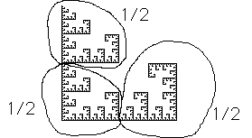
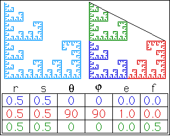

|
 |
| This fractal can be decomposed into three pieces: | ||
| ||
| Note the top and bottom left pieces have the same orientation as the entire fractal, while the bottom right piece is rotated. | ||
| Keeping in mind that our transformation rules allow only rotations fixing the origin, some care must be taken with the translation after the rotation. | ||
| Click the picture to see a derivation fo the rules. | ||
|  |
Return to Inverse Problem Examples.